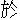

『荷花桂子不勝悲，江介年華憶昔時。天目山來孤鳳歇，海門潮去六龍移。賈充誤世終無策，庾信哀時尚有詞。莫向中原誇絕景，西湖遺恨是西施。』
這一首詩是張志遠所作。只為宋朝南渡以後，紹興、淳熙年間息兵罷戰，君相自謂太平，縱情佚樂，士大夫賞玩湖山，無復恢復中原之志，所以末一聯詩說道：『莫向中原誇絕景，西湖遺恨是西施。』那時，西湖有三秋桂子，十里荷香，青山四圍，中涵綠水，金碧樓臺相間，說不盡許多景致。蘇東坡學士有詩云：『欲把西湖比西子，淡妝濃抹兩相宜。』因此君臣耽山水之樂，忘社稷之憂，恰如吳宮被西施迷惑一般。
當初吳王夫差寵幸一個妃子，名曰西施，日逐在百花洲、錦帆涇、姑蘇臺，流連玩賞。其時有個佞臣伯嚭，逢君之惡，勸他窮奢極欲，誅戮忠臣。以致越兵來襲，國破身亡。今日宋朝南渡之後，雖然夷勢猖獗，中原人心不忘趙氏，尚可乘機恢復，也只為聽用了幾個奸臣，盤荒懈惰，以致於亡。那幾個奸臣？秦檜、韓侂冑、史彌遠、賈似道。秦檜居相位一十九年，力主和議，殺害岳飛，解散張、韓、劉諸將兵柄。韓侂冑居相位一十四年，陷害了趙汝愚丞相，罷黜道學諸臣，輕開邊釁，辱國殃民。史彌遠在相位二十六年，謀害了濟王竑，專任憸壬以居臺諫，一時正人君子，貶斥殆盡。那時蒙古盛強，天變屢見，宋朝事勢已去了七八了。也是天數當盡，又生出個賈似道來，他在相位一十五年，專一蒙蔽朝廷，偷安肆樂。後來雖貶官黜爵，死於木綿庵，不救亡國之禍。有詩為證：
奸邪自古誤人多，無奈君王輕信何？朝論若分「忠」、「佞」字，太平玉燭永調和。
話說南宋寧宗皇帝嘉定年間，浙江台州一個官人，姓賈，名涉。因往臨安府聽選，一主一僕，行至錢塘，地名叫做鳳口里。行路饑渴，偶來一個村家歇腳，打個中火。那人家竹籬茅舍，甚是荒涼。賈涉叫聲：「有人麼？」只見蘆簾開處，走個婦人出來。那婦人生得何如？
面如滿月，發若烏雲，薄施脂粉，儘有容顏，不學妖嬈，自然丰韻。鮮眸玉腕，生成福相端嚴；裙布釵荊，任是村妝希罕。分明美玉藏頑石，一似明珠墜塹淵。隨他呆子也消魂，況是客邊情易動。那婦人見了賈涉，不慌不忙，深深道個萬福。賈涉看那婦人是個福相，心下躊躇道：「吾今壯年無子，若得此婦為妾，心滿意足矣！」便對婦人說道：「下官往京候選，順路過此。欲求一飯，未審小娘子肯為炊爨否？自當奉謝。」那婦人答道：「奴家職在中饋，炊爨當然；況是尊官榮顧，敢不遵命？但丈夫不在，休嫌怠慢。」賈涉見他應對敏捷，愈加歡喜。
那婦人進去不多時，捧兩碗熟豆湯出來，說道：「村中乏茶，將就救渴。」少停，又擺出主僕兩個的飯來。賈涉自帶得有牛脯、乾菜之類，取出嗄飯。那婦人又將大磁壺盛著滾湯，放在卓上，道：「尊官淨口。」賈涉見他慇懃，便問道：「小娘子尊姓？為何獨居在此？」那婦人道：「奴家胡氏，丈夫叫做王小四。因連年種田折本，家貧無奈，要同奴家去投靠一個財主過活。奴家立誓不從，丈夫拗奴不過，只得在左近人家趁工度日，奴家獨自守屋。」賈涉道：「下官有句不識進退的言語，未知可否？」那婦人道：「但說不妨。」賈涉道：「下官頗通相術，似小娘子這般才貌，決不是下賤之婦。你今屈身隨著個村農，豈不擔誤終身？況你丈夫家道艱難，顧不得小娘子體面。下官壯年無子，正欲覓一側室，小娘子若肯相從，情願多將金帛，贈與賢夫，別謀婚娶，可不兩便？」那婦人道：「丈夫也曾幾番要賣妾身，是妾不肯。既尊官有意見憐，待丈夫歸時，尊官自與他說，妾不敢擅許。」說猶未了，只見那婦人指著門外道：「丈夫回也。」
只見王小四戴一頂破頭巾，披一件舊白布衫，吃得半醉，闖進門來。賈涉便起身道：「下官是往京聽選的，偶借此中火，甚是攪擾。」王小四答道：「不妨事。」便對胡氏說道：「主人家少個針線娘，我見你平日好手針線，對他說了。他要你去教導他女娘生活，先送我兩貫足錢。這遍要你依我去去。」胡氏半倚著蘆簾內外，答道：「後生家臉皮，羞答答地，怎到人家去趁飯？不去，不去。」王小四發個喉急，便道：「你不去時，我沒處尋飯養你。」賈涉見他說話湊巧，便詐推解手，卻吩咐家童將言語勾搭他道：「大伯，你花枝般娘子，怎捨得他往別人家去？」王小四道：「小哥，你不曉得我窮漢家事體：一日不識羞，三日不忍餓。卻比不得大戶人家，吃安閒茶飯。似此喬模喬樣，委的我家住不了。」家童道：「假如有個大戶人家，肯出錢鈔，討你這位小娘子去，你捨得麼？」王小四道：「有甚捨不得！」家童道：「只我家相公，要討一房側室。你若情願時，我攛掇多把幾貫錢鈔與你。」王小四應允。家童將言語回復了賈涉。賈涉便教家童與王小四講就四十兩銀子身價。王小四在村中央個教授來，寫了賣妻文契，落了十字花押。一面將銀子兑過，王小四收了銀子，賈涉收了契書。王小四還只怕婆娘不肯，甜言勸諭，誰知那婦人與賈涉先有意了。也是天配姻緣，自然情投意合。
當晚，賈涉主僕二人，就在王小四家歇了。王小四也打鋪在外間相伴。婦人自在裡面鋪上獨宿。明早賈涉起身，催婦人梳洗完了，吃了早飯，央王小四在村中另顧個生口馱那婦人，一路往臨安去。有詩為證：
夫妻配偶是前緣，千里紅繩暗自牽。況是榮華封兩國，村農豈得伴終年？
賈涉領了胡氏，住在臨安寓所。約有半年，謁選得九江萬年縣丞。迎接了孺人唐氏，一同到任。原來唐氏為人妒悍，賈涉平昔有個懼內的毛病；今日唐氏見丈夫娶了小老婆，不勝之怒，日逐在家淘氣。又聞胡氏有了三個月身孕，思想道：「丈夫向來無子，若小賤人生子，必然寵用，那時我就爭他不過了。我就是養得出孩兒，也讓他做哥哥，日後要被他欺侮。不如及早除了禍根方妙。」乃尋個事故，將胡氏毒打一頓，剝去衣衫，貶他在使婢隊裡，一般燒茶煮飯，掃地揩臺，鋪牀疊被。又禁住丈夫，不許與他睡。每日尋事打罵，要想墮落他的身孕。賈涉滿肚子惡氣，無可奈何。
一日，縣宰陳履常請賈涉飲酒。賈涉與陳履常是同府人，平素通家往來，相處得極好的。陳履常請得賈涉到衙，飲酒中間，見他容顏不悅，叩其緣故。賈涉抵諱不得，將家中妻子妒妾事情，細細告訴了一遍。又道：「賈門宗嗣，全賴此婦。不知堂尊有何妙策，可以保全此妾？倘日後育得一男，實為萬幸，賈氏祖宗也當銜恩於地下。」陳履常想了一會，便道：「要保全卻也容易，只怕足下捨不得他離身。」賈涉道；「左右如今也不容相近，咫尺天涯一般，有甚捨不得處？」陳履常附耳低言：「若要保全身孕，只除如此如此……」乃取紅帛花一朵，悄悄遞與賈涉，教他把與胡氏為暗記。這個計策，就在這朵花上，後來便見。有詩為證：
吃醋撚酸從古有，覆宗絕嗣甘出丑。紅花定計有堂尊，巧婦怎出男子手？
忽一日，陳縣宰打聽得丞廳請醫，雲是唐孺人有微恙。待其病痊，乃備了四盒茶果之類，教奶奶到丞廳問安。唐孺人留之寬坐，整備小飯相款，諸婢羅侍在側。說話中間，奶奶道：「貴廳有許多女使伏侍，且是伶俐。寒舍苦於無人，要一個會答應的也沒有，甚不方便。急切沒尋得，若借得一個小娘子，與寒舍相幫幾時，等討得個替力的來，即便送還，何如？」唐氏道：「通家怎說個『借』字？只怕粗婢不中用。奶奶看得如意，但憑選擇，即當奉贈。」奶奶稱謝了。看那諸婢中間，有一個生得齊整，鬢邊正插著這朵紅帛花，心知是胡氏，便指定了他，說道：「借得此位小娘子甚好。」唐氏正在吃醋，巴不得送他遠遠離身，卻得此句言語，正合其意；加添縣宰之勢，丞廳怎敢不從？料道丈夫也難埋怨，連聲答應道：「這小婢姓胡，在我家也不多時。奶奶既中意時，即今便教他跟隨奶奶去。」當時席散，奶奶告別。胡氏拜了唐氏四拜，收拾隨身衣服，跟了奶奶轎子，到縣衙去訖。唐氏方纔對賈涉說知。賈涉故意歎惜。正是：
算得通時做得凶，將他瞞在鼓當中。縣衙此去方安穩，絕勝存孤趙氏宮。
胡氏到了縣衙，奶奶將情節細說，另打掃個房鋪與他安息。光陰似箭，不覺十月滿足，到八月初八日，胡氏腹痛，產下一個孩兒。奶奶只說他婢所生，不使丞廳知道。那時賈涉適在他郡去檢校一件公事，到九月方歸。與縣宰陳履常相見，陳公悄悄的報個喜信與他。賈涉感激不盡，對陳公說：「要見新生的孩兒一面。」陳公教丫鬟去請胡氏立於簾內，丫鬟抱出小孩子，遞與賈涉。賈涉抱了孩兒，心中雖然歡喜，覷著簾內，不覺墮下淚來。兩下隔簾說了幾句心腹話兒。胡氏教丫鬟接了孩子進去，賈涉自回。自此，背地裡不時送些錢鈔與胡氏買東買西。闔家通知，只瞞過唐氏一人。
光陰荏苒，不覺二載有餘。那縣宰任滿陞遷，要赴臨安。賈涉只得將情告知唐氏，要領他母子回家。唐氏聽說，一時亂將起來，咶噪個不住。連縣宰的奶奶，也被他「奉承」了幾句。亂到後面，定要丈夫將胡氏嫁出，方許把小孩子領回。賈涉聽說嫁出胡氏一件，到也罷了；單只怕領回兒子，被唐氏故意謀害，或是絕其乳食，心下懷疑不決。
正在兩難之際，忽然門上報道：「台州有人相訪。」賈涉忙去迎時，原來是親兄賈濡。他為朝廷妙擇良家女子，養育宮中，以備東宮嬪嬙之選；女兒賈氏玉華，已選入數內。賈濡思量要打劉八太尉的關節，扶持女兒上去，因此特到兄弟任所，與他商議。賈涉在臨安聽選時，賃的正是劉八太尉的房子，所以有舊。賈涉見了哥哥，心下想道：「此來十分湊巧。」便將娶妾生子，並唐氏嫉妒事情，細細與賈濡說了。「如今陳公將次離任，把這小孩子沒送一頭處。哥哥若念賈門宗嗣，領他去養育成人，感恩非淺。」賈濡道：「我今尚無子息，同氣連枝，不是我領去，教誰看管？」賈涉大喜，私下僱了妳娘，問宰衙要了孩子，交付妳娘。囑付哥哥：「好生撫養。」就寫了劉八太尉書信一封，賷發些路費，送哥哥賈濡起身。胡氏托與陳公領去，任從改嫁。那賈涉、胡氏雖然兩不相捨，也是無可奈何。唐孺人聽見丈夫說子母都發開，十分像意了。只是苦了胡氏，又去了小孩子，又離了丈夫，跟隨陳縣宰的上路，好生悽慘，一路只是悲哭。奶奶也勸解他不住，陳履常也厭煩起來。行至維揚，吩咐水手：「就地方喚個媒婆，教他尋個主兒，把胡氏嫁去。只要對頭老實忠厚，一分財禮也不要。」你說白送人老婆，那一個不肯上樁？不多時，媒婆領一個漢子到來，說是個細工石匠，誇他許多志誠老實。你說偌大一個維揚，難道尋不出個好對頭？偏只有這石匠？是有個緣故。常言道：『三姑六婆，嫌少爭多。』那媒婆最是愛錢的，多許了他幾貫謝禮，就玉成其事了。石匠見了陳縣宰，磕了四個頭，站在一邊。陳履常看他衣衫濟楚，年力少壯，又是從不曾婚娶的，且有手藝，養得老婆過活，便將胡氏許他。石匠真個不費一錢，白白裡領了胡氏去，成其夫婦，不在話下。
再說賈涉自從胡氏母子兩頭分散，終日悶悶不樂。忽一日，唐孺人染病上牀，服藥不痊，嗚呼哀哉死了。賈涉買棺入殮已畢，棄官扶柩而回。到了故鄉，一喜一悲：喜者是見那小孩子比前長大，悲者是胡氏嫁與他人，不得一見。正是：
花開遭雨打，雨止又花殘。世間無全美，看花幾個歡？
卻說賈家小孩子長成七歲，聰明過人，讀書過目成誦。父親取名似道，表字師憲。賈似道到十五歲，無書不讀，下筆成文。不幸父親賈涉，伯伯賈濡，相繼得病而亡。殯葬已過，自此無人拘管，恣意曠蕩，呼盧六博，鬥雞走馬，飲酒宿娼，無所不至。不勾四五年，把兩分家私蕩盡。初時聽得家中說道：『嫡母胡氏嫁在維揚，為石匠之妻；姐姐賈玉華，選入宮中。』思量：「維揚路遠，又且石匠手藝，沒甚出產。聞得姐姐選入沂王府中，今沂王做了皇帝，寵一個妃子姓賈，不知是姐姐不是？且到京師，觀其動靜。」此時理宗端平初年，也是賈似道時運將至，合當發跡。將家中剩下家火，變賣幾貫錢鈔，收拾行李，逕往臨安。
那臨安是天子建都之地，人山人海；況賈似道初到，並無半個相識，沒處討個消息，鎮日只在湖上遊蕩。閒時，未免又在賭博場中頑耍，也不免平康巷中走走。不勾幾日，行囊一空，衣衫藍縷，只在西湖幫閒趁食。
一日醉倦，小憩於棲霞嶺下。遇一個道人，布袍羽扇，從嶺下經過。見了賈似道，站定腳頭，瞪目看了半晌，說道：「官人可自愛重，將來功名不在韓魏公之下。」那個韓魏公是韓蘄王諱世忠的，他位兼將相，夷夏欽仰，是何等樣功名！古今有幾個人及得他？賈似道聞此言，只道是戲侮之談，全不准信。那道人自去了。過了數日，賈似道在平康巷趙二媽家，酒後與人賭博相爭，失足跌於階下，磕損其額，血流滿面。雖然沒事，額上結下一個瘢痕。一日在酒肆中，又遇了前日的道人，頓足而歎，說道：「可惜，可惜！天堂破損，雖然功名蓋世，不得善終矣！」賈似道扯住道人衣服，問道：「我果有功名之分？若得一日稱心滿意，就死何恨？但目今流落無依，怎得個遭際？富貴從何而來？」道人又看了氣色，便道：「滯色已開，只在三日內自有奇遇，平步登天。但官人得意之日，休與秀才作對。切記，切記！」說罷，道人自去了。賈似道半信不信。
看看捱到第三日，只見賭博場中的陳二郎來尋賈似道，對他說道：「朝廷近日冊立了賈貴妃，十分寵愛，言無不從。賈貴妃自言家住台州，特差劉八太尉往台州訪問親族。你時常說有個姐姐在宮中，莫非正是貴妃？特此報知。果有瓜葛，可去投劉八太尉，定有好處。」賈似道聞言，如夢初覺。想道：「我父親存日，常說曾在劉八太尉家作寓，往來甚厚；姐姐入宮近御，也虧劉八太尉扶持。一到臨安，就該投奔他纔是，卻閒蕩過許多日子，豈不好笑！雖然如此，我身上藍縷，怎好去見劉八尉？」心生一計，在典鋪裡賃件新鮮衣服穿了，折一頂新頭巾，大模大樣，搖擺在劉八太尉府中去。自稱：「故人之子台州姓賈的，有話求見。」
劉八太尉正待打點動身，往台州訪問賈貴妃親族。聞知此言，又只怕是冒名而來的，喚個心腹親隨，先叩來歷分明，方准相見。不一時，親隨回話道：「是賈涉之子賈似道。」劉八太尉道：「快請來。」原來內相衙門，規矩最大，尋常只是呼喚而已，那個「請」字，也不容易說的，此乃是貴妃面上。當時賈似道見了劉八太尉，慌忙下拜。太尉雖然答禮，心下尚然懷疑。細細盤問，方知是實。留了茶飯，送在書館中安宿。
次早入宮，報與賈貴妃知道。貴妃向理宗皇帝說了，宣似道入宮，與貴妃相見。說起家常，姊弟二人抱頭而哭。貴妃引賈似道就在宮中見駕，哭道：「妾只有這個兄弟，無家無室，伏乞聖恩，重瞳看覷。」理宗御筆，除授籍田令。即命劉八太尉在臨安城中，撥置甲第一區；又選宮中美女十人，賜為妻妾；黃金三千兩，白金十萬兩，以備家資。似道謝恩已畢，同劉八太尉出宮去了。似道叮囑劉八太尉道：「蒙聖恩賜我住宅，必須近西湖一帶，方稱下懷。」此時劉八太尉在貴妃面上，巴不得奉承賈似道，只揀湖上大宅院，自賠錢鈔，倍價買來，與他做第宅。奴僕器用，色色皆備。
次日，宮中發出美女十名，貴妃又私贈金銀寶玩器皿，共十餘車。似道一朝富貴，將百金賞了陳二郎，謝了報信之故。又將百金賞賜典鋪中，償其賃衣。典鋪中那裡敢受？反備盛禮來賀喜。自此，賈貴妃不時宣召似道入宮相會。聖駕游湖，也時常幸其私第，或同飲博遊戲，相待如家人一般，恩倖無比。似道恃著椒房之寵，全然不惜體面，每日或轎或馬，出入諸名妓家。遇著中意時，不拘一五一十，總拉到西湖上與賓客乘舟遊玩。若賓客眾多，分船並進。另有小艇往來，載酒肴不絕。你說賈似道起自寒微，有甚賓客？有句古詩說得好，道是：『貧賤親戚離，富貴他人合。』賈似道做了國戚，朝廷恩寵日隆，那一個不趨奉他？只要一人進身，轉相薦引，自然其門如市了。文人如廖瑩中、翁應龍、趙分如等，武臣如夏貴、孫虎臣等，這都是門客中出色有名的，其餘不可盡述也。
一日，理宗皇帝游苑，登鳳皇山。至夜，望見西湖內燈火輝煌，一片光明，向左右說道：「此必賈似道也。」命飛騎探聽，果然是似道游湖。天子對貴妃說了，又將金帛一車，贈為酒資。以此似道愈加肆恣，全無忌憚。詩曰：
天子偷安無遠猷，縱容貴戚恣遨遊。問他無賽西湖景，可是安邊第一籌？
那時宋朝仗蒙古兵力，滅了金人。又聽了趙范、趙葵之計，與蒙古構難，要守河據關，收復三京。蒙古引兵入寇，責我敗盟，淮漢騷動，天子憂惶。賈似道自思無功受寵，怎能勾超官進爵？又恐被人彈議；要立個蓋世功名，以取大位，除非是安邊蕩寇，方是目前第一個大題目。乃自薦：「素諳韜略，願往淮揚招兵破賊，為天子保障東南。」理宗大喜，遂封為兩淮制置大使，建節淮揚。賈似道謝恩辭朝，攜了妻妾賓客，來淮揚赴任。
三日後，密差門下心腹訪問生母胡氏。果然跟個石匠，在廣陵驛東首住居。訪得親切，回復了似道。似道即差轎馬人夫擺著儀從去迎接。本衙門聽事官率領人夫，向胡氏磕頭，到把胡氏險些唬倒。聽事官致了制使之命，方纔心下安穩。胡氏道：「身既從夫，不可自專。」急教人去尋石匠回家，對他說了。石匠也要跟去，胡氏不能阻當，只得同行。胡氏乘轎在前，石匠騎馬在後，前呼後擁，來到制使府。似道請母親進私衙相見，抱頭而哭。算來母子分散時，似道止三歲，胡氏二十餘歲，到今又三十多年了，方纔會面相識，豈不傷感？似道聞得石匠也跟隨到來，不好相見。即將白金三百兩，差個心腹人伴他往江上興販。暗地授計，半途中將石匠灌醉，推墜江中，只將病死回報。胡氏也感傷了一場。自此母子團圓，永無牽帶。
似道鎮守淮揚六年，僥倖東南無事。天子因貴妃思想兄弟，乃欽取似道還朝，加同樞密院事。此時，丁大全罷相，吳潛代之。那吳潛號履齋，為人豪雋自喜，引進兄弟俱為顯職。賈似道忌他位居己上，乃造成飛謠，教宮中小內侍於天子面前歌之。謠云：
「大蜈公，小蜈公，盡是人間業毒蟲。夤緣攀附百蟲叢，若使飛天便食龍。」
天子聞得，乃問似道云：「聞街坊小兒盡歌此謠，主何凶吉？」似道奏道：「謠言皆熒惑星化為小兒，教人間童子歌之。此乃天意，不可不察。『蜈』與『吳』同，以臣愚見推之，『大蜈公，小蜈公』，乃指吳潛兄弟，專權亂國。若使養成其志，必為朝廷之害。陛下飛龍在天，故天意以食龍示警。為今之計，不若罷其相位，另擇賢者居之，可以免咎。」天子聽信了，即命翰林草制，貶吳潛循州安置，弟兄都削去官職。似道即代吳潛為右丞相，又差心腹人，命循州知州劉宗申日夜拾摭其短。吳潛被逼不過，伏毒而死。此乃似道狠毒處。
卻說蒙古主蒙哥屯合州城下，遣太弟忽必烈，分兵圍鄂州、襄陽一帶，人情洶懼。樞密院一日間連接了三道告急文書，朝廷大驚，乃以賈似道兼樞密使、京湖宣撫大使，進師漢陽，以救鄂州之圍。似道不敢推辭，只得拜命。聞得大學生鄭隆文武兼全，遣人招致於門下。鄭隆素知似道奸邪，怕他難與共事，乃具名刺，先獻一詩云：
「收拾乾坤一擔擔，上肩容易下肩難。勸君高著擎天手，多少傍人冷眼看。」
這首詩，明說似道位高望重，要他虛己下賢，小心做事。他若見了詩，欣然聽納，不枉在他門下走動一番。誰知似道見詩中有規諫之意，罵為狂生，把詩扯得粉碎。不在話下。
再說賈似道同了門下賓客，文有廖瑩中、趙分如等，武有夏貴、孫虎臣等，精選羽林軍二十萬，器仗鎧甲，任意取辦，擇日辭朝出師。真個是威風凜凜，殺氣騰騰。不一日，來到漢陽駐扎。此時蒙古攻城甚急，鄂州將破。似道心膽俱裂，那敢上前？乃與廖瑩中諸人商議，修書一封，密遣心腹人宋京詣蒙古營中，求其退師，情願稱臣納幣。忽必烈不許。似道遣人往復三四次。適值蒙古主蒙哥死於合州釣魚山下，太弟忽必烈一心要篡大位，無心戀戰，遂從似道請和，每年納幣、稱臣、奉貢。兩下約誓已定，遂拔寨北去，奔喪即位。
賈似道打聽得蒙古有事北歸，鄂州圍解，遂將議和、稱臣、納幣之事，瞞過不題。上表誇張己功，只說蒙古懼己威名，聞風遠遁。使廖瑩中撰為露布，又撰《福華編》，以記鄂州之功。蒙古差使人來議歲幣，似道怕他破壞己事，命軟監於真州地方。只要蒙蔽朝廷，那顧失信夷虜？理宗皇帝謂似道有再造之功，下詔褒美，加似道少師，賜予金帛無算；又賜葛嶺周圍田地，以廣其居；母胡氏封兩國夫人。
似道偃然以中興功臣自任，居之不疑。日夕引歌姬舞妾，於湖上取樂。四方貢獻，絡繹不絕。凡門客都布置顯要，或為大郡，掌握兵權。真個是：一人之下，萬人之上。每年八月八日，似道生辰，作詞頌美者，以數千計。似道一一親覽，第其高下。一時傳誦謄寫，為之紙貴。時陸景思《八聲甘州》一詞，稱為絕唱。詞云：
『滿清平世界，慶秋成，看斗米三錢。論從來，活國掄功第一，無過豐年。辦得民間安飽，餘事笑談間。若問平戎策，微妙難傳。
玉帝要留公住，把西湖一曲，分入林園。有茶爐丹灶，更有釣魚船。覺秋風未曾吹著，但砌蘭長倚北堂萱。千千歲，上天將相，平地神仙。」
其他諂諛之詞，不可盡述。
一日，似道同諸姬在湖上倚樓閒玩，見有二書生，鮮衣羽扇，豐致翩翩，乘小舟游湖登岸。傍一姬低聲贊道：「美哉，二少年！」似道聽得了，便道：「汝願嫁彼二人，當使彼聘汝。」此姬惶恐謝罪。不多時，似道喚集諸姬，令一婢捧盒至前。似道說道：「適間某姬愛湖上書生，我已為彼受聘矣。」眾姬不信，啟盒視之，乃某姬之首也，眾姬無不股栗。其待姬妾慘毒，悉如此類。
又常差人販鹽百般，至臨安發賣。太學生有詩云：
「昨夜江頭長碧波，滿船都載相公鹾。雖然要作調羹用，未必調羹用許多。」
似道又欲行富國強兵之策，御史陳堯道獻計，要措辦軍餉，便國便民，無如限田之法。怎叫做限田之法？如今大戶田連阡陌，小民無立錐之地，有田者不耕，欲耕者無田；宜以官品大小，限其田數。某等官戶止該田若干，其民戶止該田若干。餘在限外者，或回買，或派買，或官買。回買者：原係其人所賣，不拘年遠，許其回贖。派買者：揀殷實人戶，不滿限者派去，要他用價買之。官買者：官出價買之，名為「公田」，僱人耕種，收租以為軍餉之費。先行之浙右，候有端緒，然後各路照式舉行。大率回買、派買的都是下等之田，又要照價抽稅入官；其上等好田，官府自買，又未免虧損原價。浙中大擾，無不破家者，其時怨聲載道。太學生又詩云：
「胡塵暗日鼓鼙鳴，高臥湖山不出征。不識咽喉形勢地，公田枉自害蒼生。」
賈似道恐其法不行，先將自己浙田萬餘畝入官為公田。朝中官員要奉承宰相，人人聞風獻產。翰林院學士徐經孫條具公田之害，似道諷御史舒有開劾奏罷官。又有著作郎陳著，亦上疏論似道欺君瘠民之罪，似道亦尋事黜之於外。公田官陳茂濂目擊其非，棄官而去。又有錢塘人葉李者，字太白，素與似道相知，上書切諫。似道大怒，黥其面，流之於漳州。自此滿朝箝口，誰敢道個「不」字？
似道又立推排打量之法。何為推排打量之法？假如一人有田若干，要他契書，查勘買賣來歷，及質對四址明白。若對不來時，即係欺誑，沒入其田，這便是推排。又去丈量尺寸，若是有餘，即名隱匿田數，也要沒入，這便是打量。行了這法，白白的沒入人產，不知其數。太學生又有詩云：
「三分天下二分亡，猶把山河寸寸量。縱使一坵添一畝，也應不似舊封疆。」
又有人作《沁園春》詞云：
「道過江南，泥牆粉壁，右具在前。述何縣何鄉裡，住何人地，佃何人田。氣象蕭條，生靈憔悴，經界從來未必然。惟何甚？為官為己，不把人憐。
思量幾許山川，況土地分張又百年。西蜀巉巖，雲迷鳥道；兩淮清野，日警狼煙。宰相弄權，奸人罔上，誰念干戈未息肩？掌大地，何須經理，萬取千焉。」
似道屢聞太學生譏訕，心中大怒，與御史陳伯大商議，奏立士籍。凡科場應舉，及免舉人，州縣給歷一道，親書年貌世系，及所肄業於歷首，執以赴舉。過省參對筆跡異同，以防偽濫。乃密令人四下查訪，凡有詞華文采，能詩善詞者，便疑心他造言生謗，就於參對時尋其過誤，故意黜罷。由是諂諛進身，文人喪氣。時人有詩云：
「戎馬掀天動地來，荊襄一路哭聲哀。平章束手全無策，卻把科場惱秀才。」
又有人作《沁園春》詞云：
「士籍令行，條件分明，逐一排連。問子孫何習？父兄何業？明經詞賦，右具如前。最是中間，娶妻某氏，試問於妻何與焉？鄉保舉，那堪著押，開口論錢。
祖宗立法於前，又何必更張萬萬千？算行關改會，限田放糴。生民凋瘁，膏血俱朘。只有士心，僅存一脈，今又艱難最可憐。誰作俑？陳伯大附勢專權！」
陳伯大收得此詞，獻與似道。似道密訪其人不得，知是秀才輩所為，乘理宗皇帝晏駕，奏停是年科舉。自此太學、武學、宗學三處秀才，恨入骨髓。其中又有一班無恥的，倡率眾人，稱功頌德。似道欲結好學校，一一厚酧。一般也有感激賈平章之恩，願為之用的。此見秀才中人心不一，所以公論不伸。也不在話下。
卻說理宗皇帝傳位度宗，改元咸淳。那度宗在東宮時，似道曾為講官，兼有援立之恩。及即位，加似道太師，封魏國公。每朝見，天子必答拜，稱為師相而不名。又詔他十日一朝，赴都堂議事，其餘聽從自便。大小朝政，皆就私第取決。當時傳下兩句口號，道是：
『朝中無宰相，湖上有平章。』
一日，似道招右丞相馬廷鸞，樞密使葉夢鼎，於湖中飲酒。似道行令，要舉一物，送與一個古人，那人還詩一聯。似道首令云：
「我有一局棋，送與古人奕秋。奕秋得之，予我一聯詩：『自出洞來無敵手，得饒人處且饒人。』」
馬廷鸞云：
「我有一竿竹，送與古人呂望。呂望得之，予我一聯詩：『夜靜水寒魚不食，滿船空載月明歸。』」
葉夢鼎云：
「我有一張犁，送與古人伊尹。伊尹得之，予我一聯詩：『但存方寸地，留與子孫耕。』」
似道見二人所言，俱有譏諷之意，明日尋事，奏知天子，將二人罷官而去。
那時蒙古強盛，改國號曰元，遣兵圍襄陽、樊城，已三年了。滿朝盡知，只瞞著天子一人而已。似道心知國勢將危，乃汲汲為行樂之計。嘗於清明日遊湖，作絕句云：
「寒食家家插柳枝，留春春亦不多時。人生有酒須當醉，青塚兒孫幾個悲？」
於葛嶺起建樓臺亭榭，窮工極巧。凡民間美色，不拘娼尼，都取來充實其中。聞得宮人葉氏色美，勾通了穿宮太監，逕取出為妾，晝夜淫樂無度。又造多寶閣，凡珍奇寶玩，百方購求，充積如山。每日登閣一遍，任意取玩，以此為常。有人言及邊事者，即加罪責。忽一日，度宗天子問道；「聞得襄陽久困，奈何？」似道對云：「北兵久已退去，陛下安得此語？」天子道：「適有女嬪言及，料師相必知其實。」似道奏云：「此訛言，陛下不必信之。萬一有事，臣當親率大軍，為陛下誅盡此虜耳。」說罷退朝。似道乃令穿宮太監，密查女嬪名姓，將他事誣陷他，賜死宮中。正是：
是非只為多開口，煩惱皆因強出頭。堪笑當時眾臺諫，不如女嬪肯分憂。
自宮嬪死後，內外相戒，無言及邊事者。養成虜患，非一朝一夕之故也。
似道又造半閒堂，命巧匠塑己像於其中。旁室數百間，招致方術之士及雲水道人，在內停宿。似道暇日，到中堂打坐，與術士、道人談講。門客中獻詞，頌那半閒堂的極多，只有一篇名《糖多令》，最為似道所稱賞，詞云：
「天上摘星班，青牛度關。幻出蓬萊新院宇，花外竹，竹邊山。
軒冕倘來間，人生閒最難，算真閒不到人間。一半神仙先占取，留一半，與公閒。」
有一術士，號富春子，善風角鳥占。賈似道招之，欲試其術，問以來日之事。富春子乃密寫一紙，封固，囑道：「至晚方開。」次日，似道宴客湖山，晚間於船頭送客，偶見明日當頭，口中歌曹孟德「月明星稀，烏鵲南飛」二句。時廖瑩中在旁說道：「此際可拆書觀之矣。」紙中更無他事，惟寫「月明星稀，烏鵲南飛」八個字。似道大驚，方知其術神驗，遂叩以終身禍福。富春子道：「師相富貴，古今莫及，但與姓鄭人不相宜，當遠避之。」原來似道少時，曾夢自己乘龍上天，卻被一勇士打落，墮於坑塹之中，那勇士背心上繡成「滎陽」二字。滎陽卻是姓鄭的郡名，與富春子所言相合，怎敢不信？似道自此檢閱朝籍，凡姓鄭之人，極力擠排，不容他在位，宦籍中竟無一姓鄭者。有門客揣摩似道之意，說道：「太學生鄭隆慣作詩詞，譏訕朝政，此人不可不除。」似道想起昔日獻詩規諫之恨，吩咐太學博士，尋他沒影的罪過，將他黥配恩州。鄭隆在路上嘔氣而死。
又有一人善能拆字，決斷如神。似道富貴已極，漸蓄不臣之志；又恐虜信漸迫，瞞不到頭，朝廷必須見責，於是欲行董卓、曹操之事。召拆字者，以杖畫地，作「奇」字，使決休咎。拆字的相了一回，說道：「相公之事不諧矣！道是『立』，又不『可』；道是『可』，又不『立』。」似道默然無語，厚贈金帛而遣之；恐他泄漏機關，使人於中途謀害。自此反謀遂沮。富春子見似道舉動非常，懼禍而逃，可謂見機而作者矣。
卻說兩國夫人胡氏，受似道奉養，將四十年，直到咸淳十年三月某日，壽八十餘方死。衣衾棺槨，窮極華侈，齋醮追薦，自不必說。過了七七四十九日，扶柩到台州，與賈涉合葬。舉襄之日，朝廷以鹵簿送之。自皇太后以下，凡貴戚朝臣，一路擺設祭饌，爭高競勝。有累高至數丈者，裝祭之次，至攧死數人。百官俱戴孝，追送百里之外，天子為之罷朝。那時天降大雨，平地水深三尺，送喪者，都冒雨踏水而行，水沒及腰膝，泥淖滿面，無一人敢退後者。葬畢，又飯僧三萬口，以資冥福。有一僧，飯罷，將缽盂覆地而去。眾人揭不起來，報與似道。似道不信，親自來看，將手輕輕揭起，見缽盂內覆著兩行細字，乃白土寫成，字畫端楷。似道大驚，看時，卻是兩句詩。道是：
「得好休時便好休，開花結子在綿州。」
正驚訝間，字跡忽然滅沒不見。似道遍召門客，問其詩意，都不能解。直到後來，死於木綿庵，方應其語。大凡大富貴的人，前世來歷必奇，非比等閒之輩。今日聖僧來點化似道，要他回頭免禍；誰知他富貴薰心，迷而不悟。從來有權有勢的，多不得善終，都是如此。
閒話休題。再說似道葬母事畢，寫表謝恩。天子下詔，起復似道入朝。似道假意乞許終喪，卻又諷御史們上疏，虛相位以待己。詔書連連下來，催促起程。七月初，似道應命，入朝面君，復居舊職。其月下旬，度宗晏駕，皇太子顯即位，是為恭宗。此時元左丞相史天澤，右丞相伯顏，分兵南下，襄、鄧、淮、揚，處處告急。賈似道料定恭宗年少膽怯，故意將元兵消息，張皇其事，奏聞天子，自請統軍行邊。卻又私下吩咐御史們上疏留己，說道：「今日所恃，只師臣一人。若統軍行邊，顧了襄漢一路，顧不得淮揚；若顧了淮揚一路，顧不得襄漢。不如居中以運天下，運籌帷幄之中，方能決勝於千里之外。倘師臣出外，陛下有事商量，與何人議之？」恭宗准奏道：「師相豈可一日離吾左右耶？」
不隔幾月，樊城陷了，鄂州破了。呂文煥死守襄陽五年，聲援不通，城中糧盡，力不能支，只得以城降元。元師乘勝南下，賈似道遮瞞不過，只得奏聞。恭宗聞報，大驚，對似道道：「元兵如此逼近，非師相親行不可。」似道奏道：「臣始初便請行邊，陛下不許；若早聽臣言，豈容胡人得志若此？」恭宗於是下詔，以賈似道都督諸路軍馬。似道薦呂師夔參贊都督府軍事。其明年為恭宗皇帝德佑元年，似道上表出師，旌旗蔽天，舳艫千里，水陸並進。領著兩個兒子，並妻妾輜重，凡百餘舟。門客俱帶家小而行。參贊呂師夔先到江州，以城降元，元兵乘勢破了池州。似道聞此信，不敢進前，遂次於魯港。步軍招討使孫虎臣，水軍招討使夏貴，都是賈似道門客，平昔間談天說地，似道倚之為重，其實原沒有張、韓、劉、岳的本事，今日遇了大戰陣，如何僥倖得去？
卻說孫虎臣屯兵於丁家洲，元將阿朮來攻。孫虎臣抵敵不過，先自跨馬逃命，步軍都四散奔潰。阿朮遣人繞宋舟大呼道：「宋家步軍已敗，你水軍不降，更待何時？」水軍見說，人人喪膽，個個心驚，不想廝殺，只想逃命，一時亂將起來。舳艫簸蕩，乍分乍合，溺死者不可勝數。似道禁押不住，急召夏貴議事。夏貴道：「諸軍已潰，戰守俱難。為師相計，宜入揚州，招潰兵，迎駕海上。貴不才，當為師相死守淮西一路。」說罷自去。少頃，孫虎臣下船，撫膺慟哭道：「吾非不欲血戰，奈手下無一人用命者，奈何？」似道尚未及對，哨船來報道：「夏招討舟已解纜先行，不知去向。」時軍中更鼓正打四更，似道茫然無策。又見哨船報道：「元兵四圍殺將來也。」急得似道面如土色，慌忙擊鑼退師，諸軍大潰。孫虎臣扶著似道，乘單舸奔揚州。堂吏翁應龍搶得都督府印信，奔還臨安。到次日，潰兵蔽江而下。似道使孫虎臣登岸，揚旗招之，無人肯應者。只聽得罵聲嘈雜，都道：「賈似道奸賊，欺蔽朝廷，養成賊勢，誤國蠹民，害得我們今日好苦！」又聽得說道：「今日先殺了那夥奸賊，與萬民出氣。」說聲未絕，船上亂箭射來，孫虎臣中箭而倒。似道看見人心已變，急催船躲避，走入揚州城中，托病不出。
話分兩頭。卻說右丞相陳宜中，平昔諂事似道，無所不至，似道扶持他做到相位。宜中見翁應龍奔還，問道：「師相何在？」應龍回言不知。宜中只道已死於亂軍之中，首上疏論似道喪師誤國之罪，乞族誅以謝天下。於是御史們又趨奉宜中，交章劾奏。恭宗天子方悟似道奸邪誤國，乃下詔暴其罪，略云：
「大臣具四海之瞻，罪莫大於誤國；都督專閫外之寄，律尤其重於喪師。具官賈似道，小才無取，大道未聞。歷相兩朝，曾無一善：變田制以傷國本，立士籍以阻人才，匿邊信而不聞，曠戰功而不舉。至於寇逼，方議師征，謂當纓冠而疾趨，何為抱頭而鼠竄？遂致三軍解體，百將離心，社稷之勢綴旒，臣民之言切齒。姑示薄罰，俾爾奉祠。嗚呼！膺狄懲荊，無復周公之望；放兜殛鯀，尚寬《虞典》之誅。可罷平章軍馬重事及都督諸路軍馬。」
廖瑩中舉家亦在揚州，聞似道褫職，特造府中問慰。相見時，一言不能發，但索酒與似道相對痛飲，悲歌雨泣，直到五鼓方罷。瑩中回至寓所，遂不復寢，命愛姬煎茶。茶到，又遣愛姬取酒去。私服冰腦一握。那冰腦是最毒之物，服之無不死者。藥力未行，瑩中只怕不死，急催熱酒到來，袖中取出冰腦，連進數握。愛姬方知吃的是毒藥，向前奪救，已不及了，乃抱瑩中而哭。瑩中含著雙淚，說道；「休哭，休哭！我從丞相二十年，安享富貴。今日事敗，得死於家中，也算做善終了。」說猶未畢，九竅流血而死。可憐廖瑩中聰明才學，詩字皆精，做了權門犬馬，今日死於非命。詩云：
不作無求蚓，甘為逐臭蠅。試看風樹倒，誰復有榮藤？
再說賈似道罷相，朝中議論紛紛，謂其罪不止此。臺臣復交章劾奏，請加斧鉞之誅。天子念他是三朝元老，不忍加刑，謫為高州團練副使，仍命於循州安置。其田產園宅，盡數籍沒，以充軍餉。謫命下日，正是八月初八日，值似道生辰建醮，乃自撰青詞祈佑，略云：
「老臣無罪，何眾議之不容？上帝好生，奈死期之已迫。適當懸弧之旦，預陳易簀之詞。竊念臣似道際遇三朝，始終一節；為國任怨，遭世多艱。屬醜虜之不恭，驅孱兵而往御。士不用命，功竟無成。眾口皆詆其非，百喙難明此謗。四十年勞悴，悔不效留侯之保身；三千里流離，猶恐置霍光於赤族。仰慚覆載，俯愧劬勞。伏望皇天后土之鑒臨，理考度宗之昭格。三宮霽怒，收瘴骨於江邊；九廟闡靈，掃妖氛於境外。」
故宋時立法，凡大臣安置遠州，定有個監押官，名為護送，實則看守，如押送犯人相似。今日似道安置循州，朝議斟酌個監押官，須得有力量的，有手段的，又要平日有怨隙的，方纔用得。只因循州路遠，人人怕去。獨有一位官員，慨然請行。那官員是誰？姓鄭，名虎臣，官為會稽尉，任滿到京。此人乃是太學生鄭隆之子。鄭隆被似道黥配而死，虎臣銜恨在心，無門可報，所以今日願去。朝中察知其情，遂用為監押官。似道雖然不知虎臣是鄭隆之子，卻記得幼年之夢，和那富春子的說話，今日正遇了姓鄭的人，如何不慌。臨行時，備下盛筵，款待虎臣。虎臣巍然上坐。似道稱他是天使，自稱為罪人，將上等寶玩，約值數萬金獻上，為進見之禮；含著兩眼珠淚，悽悽惶惶的哀訴，述其幼時所夢，「願天使大發菩薩之心，保全螻蟻之命，生生世世，不敢忘報。」說罷，屈膝跪下。鄭虎臣微微冷笑，答應道：「團練且起。這寶玩是殃身之物，下官如何好受？有話途中再講。」似道再三哀求，虎臣只是微笑，似道心中愈加恐懼。
次日，虎臣催促似道起程。金銀財寶，尚十餘車；婢妾童僕，約近百人。虎臣初時並不阻當。行了數日，嫌他行李太重，擔誤行期，將他童僕輩日漸趕逐；其金寶之類，一路遇著寺院，逼他布施。似道不敢不依。約行半月，止剩下三個車子，老年童僕數人，又被虎臣終日打罵，不敢親近。似道所坐車子，插個竹竿，扯帛為旗，上寫著十五個大字，道是「奉旨監押安置循州誤國奸臣賈似道」。似道羞愧，每日以袖掩面而行。一路受鄭虎臣凌辱，不可盡言。
又行了多日，到泉州洛陽橋上，只見對面一個客官，匆匆而至。見了旗上題字，大呼：「平章，久違了！一別二十餘年，何期在此相會？」似道只道是個相厚的故人，放下衣袖看時，卻是誰來？那客官姓葉，名李，字太白，錢唐人氏，因為上書切諫似道，被他黥面流於漳州。似道事敗，凡被其貶竄者，都赦回原籍。葉李得赦還鄉，路從泉州經過，正與似道相遇，故意叫他。似道羞慚滿面，下車施禮，口稱得罪。葉李問鄭虎臣討紙筆來，作詞一首相贈，詞云：
「君來路，吾歸路，來來去去何曾住？公田關子竟何如，國事當時誰與誤？
雷州戶，厓州戶，人生會有相逢處。客中頗恨乏蒸羊，聊贈一篇長短句。」
當初北宋仁宗皇帝時節，宰相寇準有澶淵退虜之功，卻被奸臣丁謂所譖，貶為雷州司戶。未幾，丁謂奸謀敗露，亦貶於厓州，路從雷州經過。寇準遣人送蒸羊一隻，聊表地主之禮。丁謂慚愧，連夜偷行過去，不敢停留。今日葉李詞中，正用這個故事，以見天道反覆，冤家不可做盡也。似道得詞，慚愧無地，手捧金珠一包，贈與葉李，聊助路資。葉李不受而去。鄭虎臣喝道：「這不義之財，犬豕不顧，誰人要你的！」就似道手中奪來，拋散於地，喝教車仗快走，口內罵聲不絕。似道流淚不止。
鄭虎臣的主意，只教賈似道受辱不過，自尋死路，其如似道貪戀餘生。比及到得漳州，童僕逃走俱盡，單單似道父子三人。真個是身無鮮衣，口無甘味，賤如奴隸，窮比乞兒，苦楚不可盡說。漳州太守趙分如，正是賈似道舊時門客，聞得似道到來，出城迎接。看見光景淒涼，好生傷感。又見鄭虎臣顏色不善，不敢十分慇懃。是日，趙分如設宴館驛，管待鄭虎臣。意欲請似道同坐，虎臣不許，似道也謙讓道：「天使在此，罪人安敢與席？」到教趙分如過意不去。只得另設一席

別室，使通判陪侍似道，自己陪虎臣。飲酒中間，分如察虎臣口氣，銜恨頗深，乃假意問道：「天使今日押團練至此，想無生理，何不教他速死，免受蒿惱，卻不乾淨？」虎臣笑道：「便是這惡物事，偏受得許多苦惱，要他好死卻不肯死。」趙分如不敢再言。次日五鼓，不等太守來送，便催趲起程。離城五里，天尚未大明，到個庵院。虎臣教歇腳，且進庵梳洗早膳。似道看這庵中扁額寫著「木綿庵」三字，大驚道：「二年前，神僧缽盂中贈詩，有『開花結子在綿州』句，莫非應在今日？我死必矣！」進庵，急呼二子吩咐說話，已被虎臣拘囚於別室。似道自分必死，身邊藏有冰腦一包，因洗臉，就掬水吞之。覺腹中痛極，討個虎子坐下，看看命絕。虎臣料他服毒，乃罵道：「奸賊，奸賊！百萬生靈死於汝手，汝延捱許多路程，卻要自死。到今日，老爺偏不容你！」將大槌連頭連腦打下二三十，打得希爛，嗚呼死了。卻教人報他兩個兒子說道；「你父親中惡，快來看視。」兒子見老子身死，放聲大哭。虎臣奮怒，一槌一個，都打死了。卻教手下人拖去一邊，只說 走去了。虎臣投槌於地，歎道：「吾今日上報父仇，下為萬民除害，雖死不恨矣。」就用隨身衣服，將草薦捲之，埋於木綿庵之側。埋得定當，方將病狀關白太守趙分如。趙分如明知是虎臣手腳，見他凶狠，那敢盤問？只得依他開病狀，申報各司去訖。直待虎臣動身去後，方纔備下棺木，掘起似道屍骸，重新殯殮。埋葬成墳，為文祭之，辭曰：
「嗚呼！履齋死蜀，死於宗申；先生死閩，死於虎臣。哀哉，尚饗！」
那履齋是誰？姓吳，名潛，是理宗朝的丞相。因賈似道謀代其位，造下謠言，誣之以罪，害他循州安置，卻教循州知州劉宗申逼他服毒而死。今日似道下貶循州，未及到彼，先死於木綿庵，比吳潛之禍更慘。這四句祭文，隱隱說天理報應。趙分如雖然出於似道門下，也見他良心不泯處。
閒話休題。再說似道既貶之後，家私田產，雖說入官，那葛嶺大宅，誰人管業？高臺曲池，日就荒落，牆頹壁倒。遊人來觀者，無不感歎。多有人題詩於門壁。今錄得二首，詩云：
「深院無人草已荒，漆屏金字尚輝煌。底知事去身宜去？豈料人亡國亦亡？理考發身端有自，鄭人應夢果何祥？臥龍不肯留渠住，空使晴光滿畫牆。」
又詩云：
「事到窮時計亦窮，此行難倚鄂州功。木綿庵裡千年恨，秋壑亭中一夢空。石砌苔稠猿步月，松亭葉落鳥呼風。客來不用多惆悵，試向吳山望故宮。」
本章完!